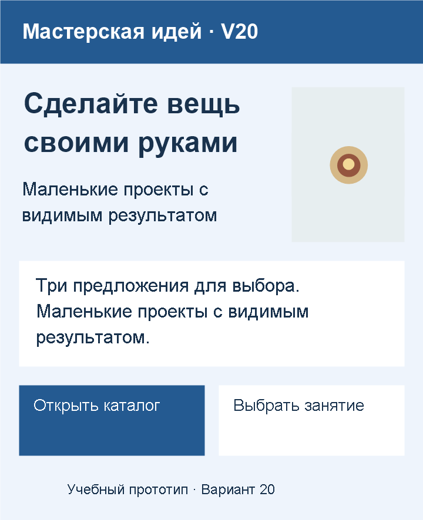
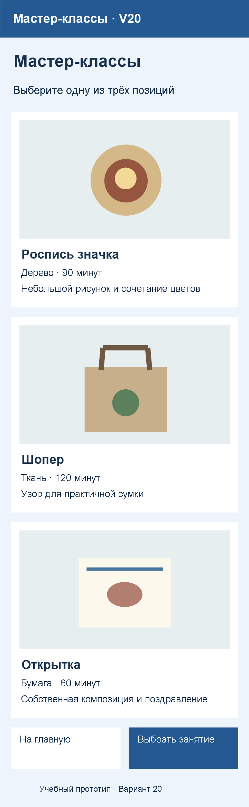
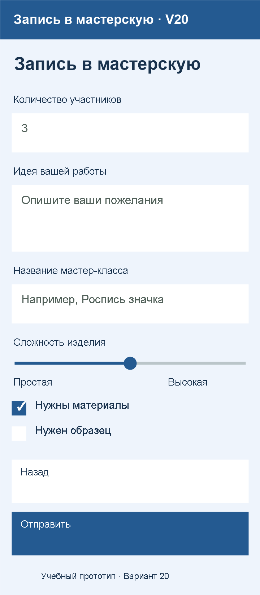
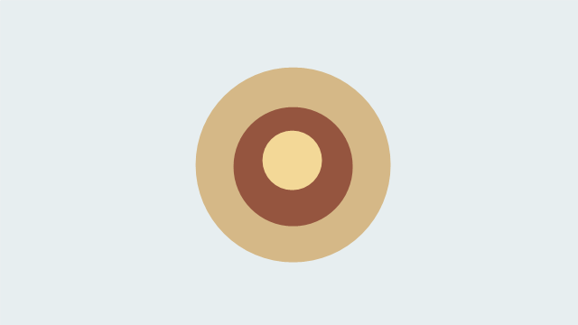
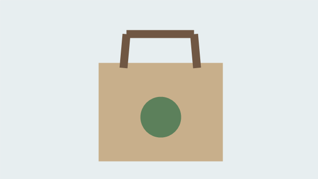
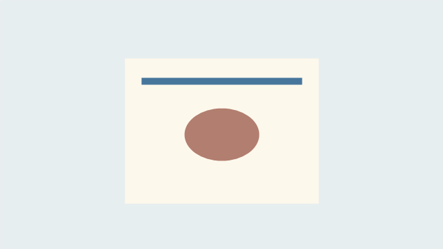

Вариант 20 — Мастерская идей
Ваше веб-приложение — «Мастерская идей · V20». Сохраните номер 20 на всём протяжении работы. Фамилия в приложении не требуется.
Этот лист определяет содержание и результат. Как создавать файлы, писать HTML, подключать CSS и JavaScript, объясняют занятия курса. Выполняйте только изученный этап, не всё задание сразу.
Что сделать сейчас
На 21 октября назначены первые три занятия веб-блока:
| Занятие | Результат для вашего варианта |
|---|---|
| 10 — исследуем веб-страницу | Найдены название, изображение и предполагаемое действие; объяснено, за что отвечают содержание, оформление и программная логика |
| 11 — создаём первый проект | В браузере открывается страница с вашим названием и пояснением; изменение оформления видно, сообщение с номером 20 найдено в консоли |
| 12 — размечаем содержание | На главной есть смысловые разделы, список из двух позиций своего каталога, ссылка внутри страницы и одно изображение с описанием |
Сейчас не требуется: полный каталог, форма, точное повторение макетов, обработка заявок, установка PWA. Эти результаты появятся в следующих занятиях.
Содержание главной страницы
| Элемент | Ваш текст или изображение |
|---|---|
| Название приложения | Мастерская идей · V20 |
| Заголовок главной | Сделайте вещь своими руками |
| Короткое пояснение | Маленькие проекты с видимым результатом |
| Описание | Три предложения для выбора. Маленькие проекты с видимым результатом. |
| Основное изображение | item1.png из набора ниже |
| Название перехода к каталогу | Открыть каталог |
| Название перехода к форме | Выбрать занятие |
| Подпись | Учебный прототип · Вариант 20 |
В первой версии достаточно названия приложения и короткого пояснения. На занятии 12 добавьте заголовок содержания, описание и другие изученные элементы. Переходы между разделами приложения появятся позднее; сейчас проверяется только ссылка внутри главной страницы.
Содержание каталога
Название — «Мастер-классы». Пояснение — «Выберите одну из трёх позиций».
| № | Название | Характеристика | Описание | Файл изображения |
|---|---|---|---|---|
| 1 | Роспись значка | Дерево · 90 минут | Небольшой рисунок и сочетание цветов | item1.png |
| 2 | Шопер | Ткань · 120 минут | Узор для практичной сумки | item2.png |
| 3 | Открытка | Бумага · 60 минут | Собственная композиция и поздравление | item3.png |
Сохраните этот порядок позиций. На занятии 12 возьмите первые два названия для простого списка. Полные карточки каталога создаются на следующих занятиях.
Содержание формы — для следующих этапов
Название формы — «Запись в мастерскую». Перед каждым полем должна оставаться видимая подпись.
| Подпись | Какие данные нужны | Уточнение |
|---|---|---|
| Количество участников | Целое количество | Начальное значение: 3 |
| Идея вашей работы | Несколько строк текста | Подсказка: Опишите ваши пожелания |
| Название мастер-класса | Название выбранной позиции | Например, Роспись значка |
Дополнительные возможности выбора:
- Нужны материалы: выбрано в начале.
- Нужен образец: не выбрано в начале.
- Сложность изделия: шкала от 1 до 5; начальное значение 3. Края шкалы: «Простая» и «Высокая».
Действия формы — «Назад» и «Отправить». Это учебная форма: сначала проверяется заполнение, позднее — обработка введённых данных по заданию занятия. Отправка на реальный сервер и сбор персональных данных не требуются.
Ориентир оформления — после изучения CSS
- Фон:
#EEF4FC. Основной текст:#19324D. - Основной цвет действий:
#245A91, текст на нём — белый. Проверяйте читаемость. - Компоновка каталога: изображения сверху. На узком экране допускается перестроение для удобства чтения.
- Главное название выделено, подписи полей читаются, изображения сохраняют пропорции.
- При сужении окна текст и действия остаются доступны; элементы не перекрывают друг друга.
Макеты ниже показывают состав и общий замысел интерфейса. Это не снимки готового сайта и не требование воспроизвести системную панель, точные размеры или прежнюю навигацию. Способ веб-вёрстки и проверка адаптивности разбираются в занятиях.



Проверка текущего этапа
После занятия 11 покажите страницу своего варианта, изменение цвета и сообщение в консоли. Измените одну надпись, сохраните и откройте страницу заново.
После занятия 12 покажите разделы главной, два пункта списка, работающую ссылку внутри страницы и изображение. Найдите в коде соответствующий элемент и объясните его назначение. Сохраните папку веб-проекта целиком.
Подробный порядок проверки — в статье текущего занятия. Более поздние возможности оцениваются только после их изучения.
Изображения для работы
Сохраните нужные иллюстрации в свой веб-проект по инструкции занятия. Разрешены собственные изображения по тем же сюжетам.



Вернуться к выбору варианта или занятиям курса.